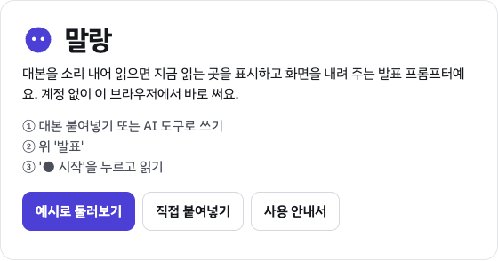
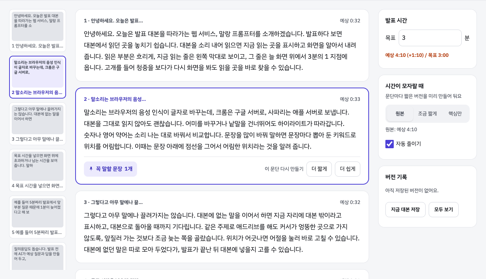
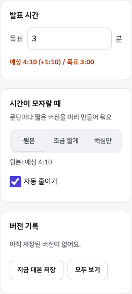
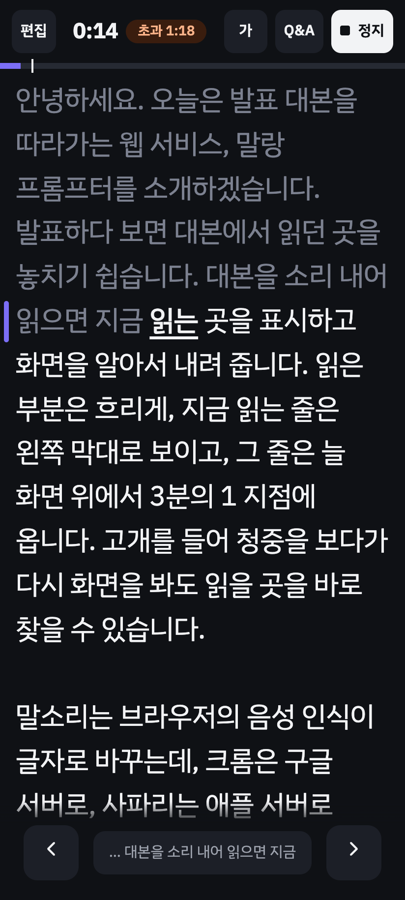
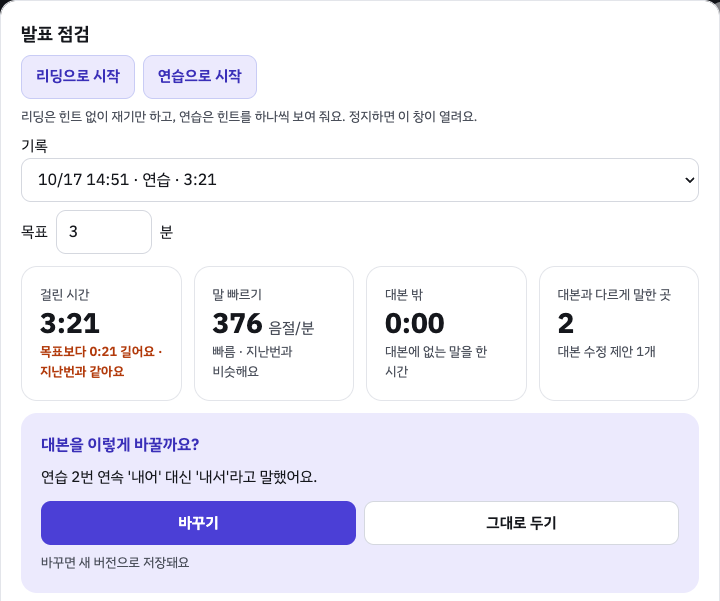
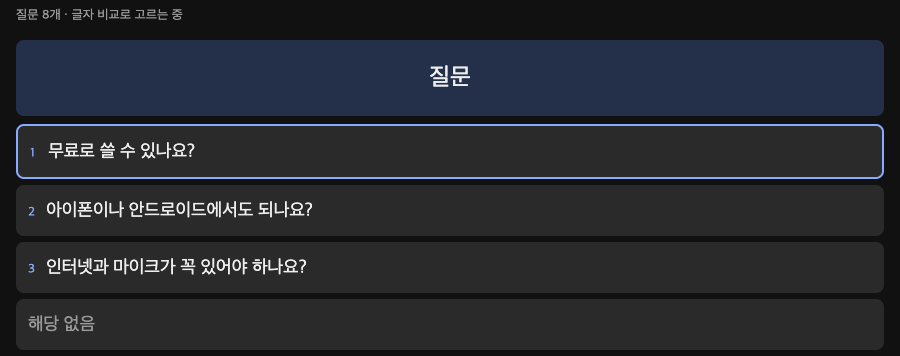
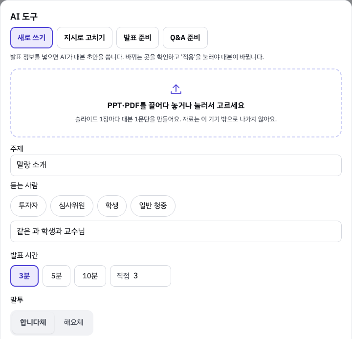

소리 내어 읽으면 대본이 따라오는 발표 프롬프터예요. 가입 없이 Chrome에서 써요.
앱 열기발표 화면에선 '편집'을 눌러야 '⋯'과 'AI 도구'가 보여요.

붙여넣으면 바로 저장되고, 문단마다 카드가 돼요.
대본을 고치면 읽던 자리와 시간이 처음으로 돌아가요.


읽는 곳을 또렷하게 보여 주고 화면을 내려 줘요.

연습하면서 구간마다 시간과 빠르기를 재요.
높낮이와 쉼은 PC Chrome의 리딩·연습에서 재요('가' › '목소리 분석'). 감정은 재지 않아요.

청중 질문을 따라 말하면 준비한 답을 찾아 줘요.

대본에 없는 말을 해도 그 자리에서 기다려요.
AI 키가 없어도 복사와 붙여넣기로 써요.

Chrome 탭에서 주소창 왼쪽 아이콘을 눌러 마이크를 허용하고 새로고침해 주세요.
마이크 버튼이 '다시 듣기'면 눌러 주세요. 읽을 단어를 누르면 거기서 다시 따라와요.
한 번 열었던 기기라면 열려요. 음성 인식은 안 돼서 화살표 단추로 넘겨요.
'⋯' › '파일로 내보내기'로 받고, 그 기기에서 '파일 가져오기'로 열어 주세요.
실제 마이크와 휴대폰으로는 아직 확인하지 못했어요. 발표 전날 쓸 기기로 끝까지 연습해 보세요.